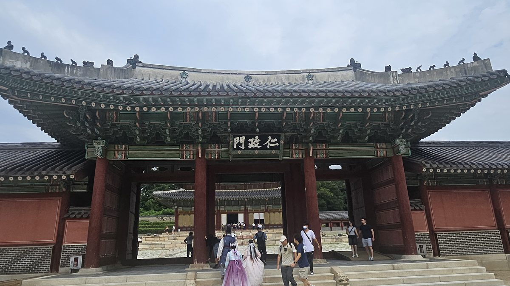
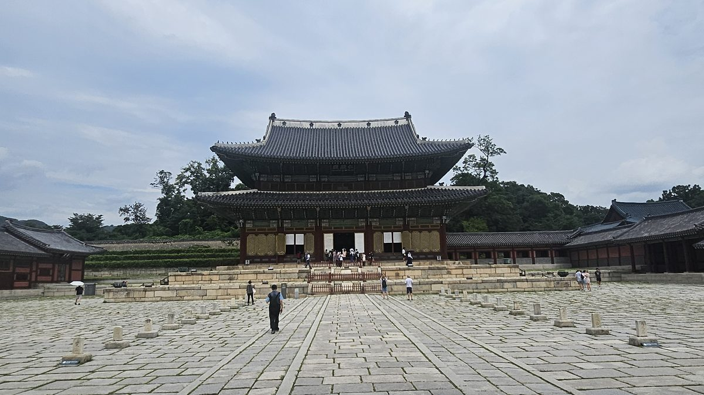
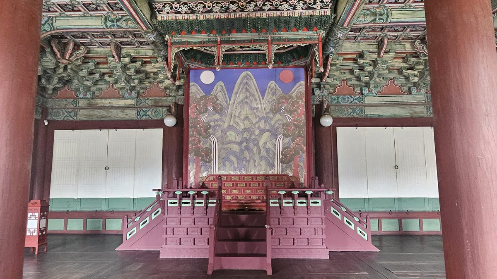
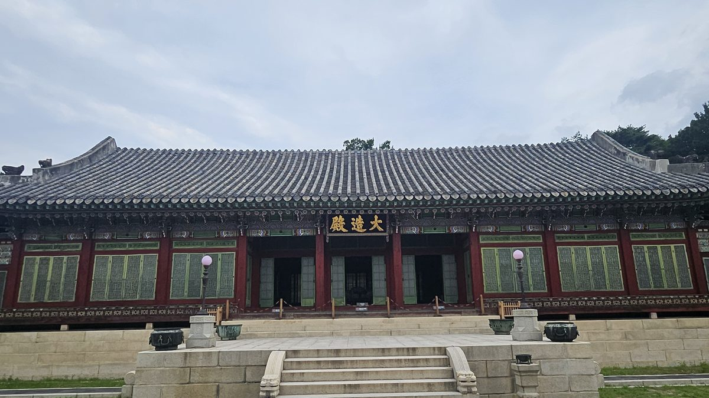
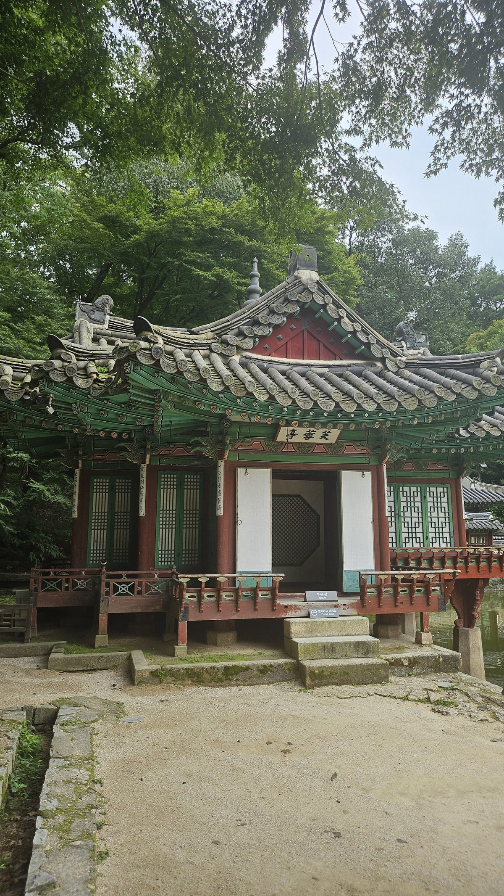
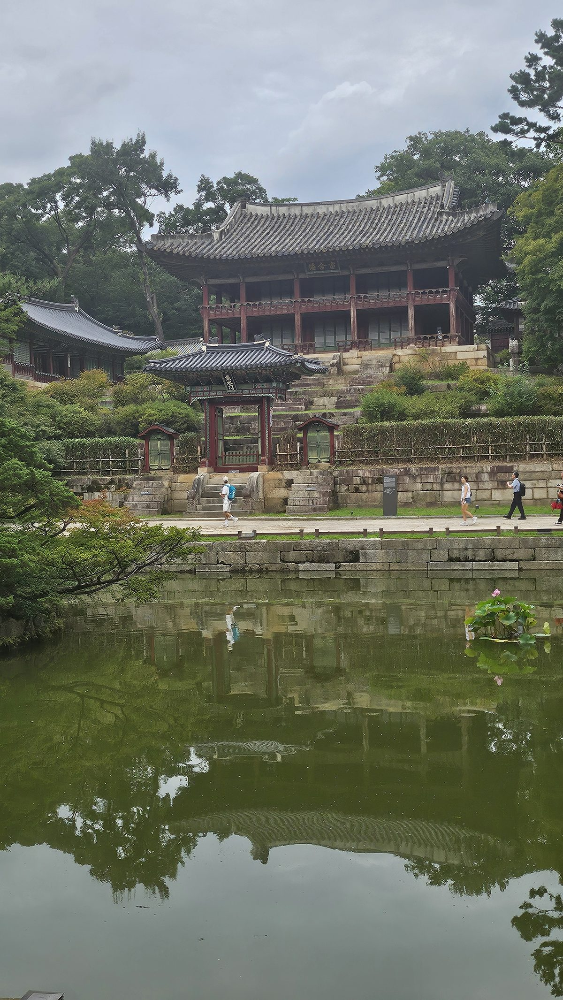
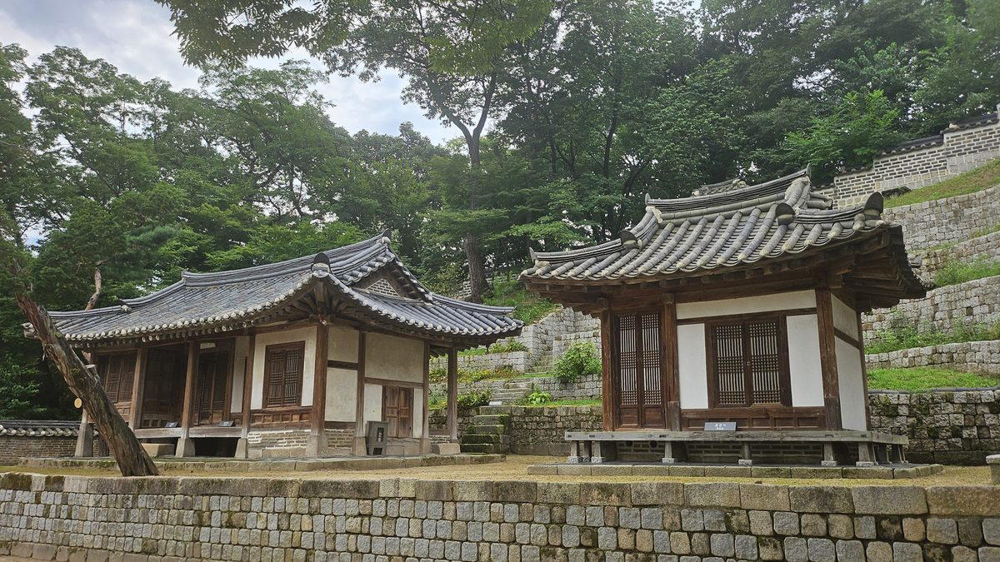

그는 경복궁을 두고 새 궁궐을 지어 그곳으로 들어갔다. 몇 해 전 권력투쟁의 피가 흘렀던 공간과 거리를 둔 선택이었다.
돌아왔지만, 다른 궁을 택했다
1398년, 이방원은 경복궁 근정문 일대에서 정도전 세력을 제거하고 이복동생 방석과 방번을 죽였다(제1차 왕자의 난). 그 여파로 태조는 상심 속에 왕위를 정종에게 넘겼고, 정종은 1399년 수도를 다시 개성으로 옮겼다. 하지만 1400년 제2차 왕자의 난을 거쳐 실권을 완전히 장악한 이방원은 한양 재천도를 결정한다.
문제는 여기부터다. 한양엔 이미 정궁 경복궁이 멀쩡히 있었다. 그런데도 태종은 향교동에 새 이궁(離宮) 건설을 명한다. 1404년 착공, 1405년 완공. 그 궁이 창덕궁이다.
경복궁을 두고 왜 새 궁을 지었는가 — 기록은 그 이유를 직접 말하지 않는다. 다만 태종에게 경복궁은 정도전과 두 이복동생의 피가 남은 공간이었다. 그가 굳이 새 궁을 택했다는 사실은 여러 해석을 낳는다. 여기서는 그것을 단정된 죄책감이 아니라, 피의 기억이 남은 공간과 거리를 두려 한 선택의 가능성으로 읽는다.
사는 곳은 창덕궁, 국가의 얼굴은 여전히 경복궁
완공 직후 태종은 개경에서 한양으로 돌아오는 길에, 경복궁이 아니라 곧장 창덕궁으로 들어갔다. 이후 1418년 세종에게 양위할 때까지 그는 주로 이곳에서 거처했다. 창건 당시 규모는 외전 74칸, 내전 118칸 — 궁궐로서 필요한 기능은 갖췄지만 경복궁만큼 웅장하진 않았다.
흥미로운 점은, 그럼에도 대규모 국가행사(즉위 관련 의례, 사신 접견 등)는 여전히 경복궁 근정전과 경회루에서 치렀다는 것이다. 산 곳은 창덕궁, 나라의 얼굴을 보인 곳은 경복궁 — 개인의 거처와 국가의 상징 공간을 분리해 운용한 태종의 선택이었다.
정문인 돈화문은 1412년(태종 12)에야 세워졌다. 궁을 완공한 뒤에도 그는 계속 손을 보태고 있었다.
여섯 개의 길이 모두 왕에게로
창덕궁은 도피처이기만 한 것이 아니었다. 1405년 이어(移御)부터 1418년 양위까지, 이 궁은 태종 통치의 실질적 무대였다. 그리고 재위 14년째인 1414년, 그는 이 궁에서 조선 정치의 구조 자체를 바꿨다 — 6조직계제(六曹直啓制)다.
그전까지 이조·호조·예조·병조·형조·공조의 6조는 의정부(3정승)를 거쳐야 왕에게 보고할 수 있었다. 정도전이 설계한 이 의정부서사제 아래서는 재상들이 국정의 실질적 결재선이었다. 태종은 이 중간 단계를 잘라냈다. 6조가 왕에게 직접 보고하고 왕이 직접 재가하는 구조 — 판서들의 품계도 함께 올려 힘을 실어줬다.
겉으로 보면 권한의 분산이다. 소수 재상(의정부)에 몰려 있던 결재권이 여섯 부서로 쪼개졌으니까. 그러나 실제 효과는 정반대였다. 여섯 개로 나뉜 길이 전부 왕 한 사람에게로 모이게 된 것이다. 개국공신들의 아성이던 의정부는 자문기구로 내려앉았다. 권력을 나눈 것처럼 보이게 하면서 실제로는 자신에게 모두 걷어들인 것 — 광통교에서 원한과 치수를 한 공사에 겹쳤던 그 사람다운 설계다.
6조직계제는 태종 즉위 직후가 아니라 재위 14년째(1414년)에 시행됐다. 즉위 초부터 왕권을 틀어쥐었다는 식의 서술은 시기상 부정확하다 — 사병 혁파, 외척 제거 등으로 10여 년간 기반을 다진 뒤에야 실행한, 오래 준비된 수순이었다. 이 제도는 세종 후반기(1436) 의정부서사제로 환원됐다가 세조 때(1455) 부활하는 등, 이후 왕권 강화기마다 반복 소환되는 카드가 된다.
그 6조 관청들이 늘어서 있던 광화문 앞길(육조거리)은 지금 광화문광장이 되었고, 사헌부·의정부의 흔적은 터 표석과 발굴 유구 안내판 몇 개로만 남아 있다. 건물은 사라졌지만 구조는 남았다 — 실무 부처가 최고 결정권자에게 직접 보고하는 체계는, 형태를 바꿔가며 오늘의 행정에까지 이어지고 있다.
궁을 다 짓고도, 그는 정원을 하나 더 만들었다
필수 전각을 완공한 뒤에도 태종은 멈추지 않았다. 창덕궁 북쪽에 별도의 후원(後苑)을 조성한 것이다. 그는 이후 이 공간을 자주 찾으며 각별한 애착을 보였다고 전해진다.
국가유산청 공식 자료는 창덕궁 창건과 같은 해인 1405년에 후원도 함께 조성됐다고 기록한다. 반면 일부 자료는 궁궐 필수 건물을 먼저 마친 뒤 1406년부터 후원 조성에 착수했다고 전한다. 1년의 차이가 있어 본문에서는 "1405~1406년"으로 병기한다.
태종 당대에 이 공간은 그저 "후원(後苑)"이라 불렸다. 지금 널리 쓰이는 "비원(祕苑)"이라는 이름은 대한제국 시기(1904년 무렵)부터 문헌에 등장하는 후대의 명칭이다. 즉 "태종이 비원을 만들었다"는 서술은 시대착오이며, 정확히는 "후원(후일의 비원)"이라 써야 한다.
궁궐과 함께 후원을 조성한 사실은 분명하지만, 그것을 태종의 죄책감이나 은신 욕구로 단정할 근거는 없다. 답사에서는 오히려 창덕궁이 그에게 단순한 도피처가 아니라 거처이자 통치의 실질적 무대였다는 점에 주목한다.
지금 서 있는 건물은 태종의 것이 아니다
돈화문을 지나 인정문에 들어서면 경복궁과는 확실히 다른 감각이 온다. 정문-정전-편전-침전이 일직선으로 놓인 경복궁의 엄격한 좌우대칭과 달리, 창덕궁은 자연 지형을 따라 여러 축이 흩어져 있다. 경복궁과 다른 창덕궁의 지형 순응적 배치가 몸으로 느껴진다.

다만 지금 보이는 인정전은 태종이 지은 그 건물이 아니다. 1405년 창건 당시엔 정면 3칸짜리 소박한 전각이었고, 1418년(세종 즉위년) 5칸으로 확장됐다. 이후 1592년 임진왜란으로 소실 → 1608년(광해군) 중건 → 1803년 화재로 재소실 → 1804년(순조 4) 재건— 지금 서 있는 건물은 이 마지막 순조 대 재건본이다.

2막에서 다뤘듯 태종 당대엔 "사는 곳은 창덕궁, 나라의 얼굴은 경복궁"이라는 구분이 뚜렷했다. 그런데 임진왜란으로 경복궁이 전소된 뒤 약 270년간 재건되지 못하면서, 창덕궁 인정전이 조선 후기 내내 사실상 법궁의 정전 역할을 대신했다. 태종이 그어둔 선이, 그의 후손들의 시대에는 완전히 지워진 셈이다.

침전인 대조전도 사정은 비슷하다. 1917년 화재로 소실됐고, 1920년 재건 당시엔 경복궁의 교태전 건물을 그대로 옮겨와 다시 세웠다. 지금 대조전은 이름은 창덕궁이지만 뼈대는 경복궁인 셈이다.

후원 — 정원이 아니라 서재였다
부용지를 지나 주합루로 오르는 길은 흔히 생각하는 "왕의 놀이터"와는 결이 다르다. 주합루 1층은 규장각(왕실 도서관), 2층은 열람실이었다. 어제(御製)·어필(御筆)을 보관하고, 정조를 보좌하던 신하들이 정책을 연구하고 토론하던 공간이었다. 연경당 곳곳에 붙은 서향각(書香閣, "책 향기 나는 집") 같은 이름들도 같은 결이다. 후원 일부는 정조대 이후 학문과 정치의 공간으로도 적극 활용되었다.



주합루는 1776년(정조 즉위년), 연경당은 1827~1828년(순조 27~28)에 지어졌다 — 태종보다 각각 370년, 420년 뒤다. "서재 같다"는 인상은 정확하지만, 그 인상을 만든 건물들은 정조·순조 대의 것이다. 태종이 1405~1406년에 처음 조성한 후원은 지금과는 비교할 수 없이 작고 소박했을 것으로 추정된다.
광통교에서 태종은 도전의 흔적을 지웠다. 창덕궁에 들어온 뒤에는 한 걸음 더 나아갔다. 사람을 제거하는 것만으로는 왕권을 지킬 수 없었다. 그래서 그는 권력을 제도로 만들었다.
1414년 육조직계제는 그 설계의 정점이었다. 육조거리는 경복궁 앞에 남아 있었지만, 여섯 관청의 보고는 의정부를 거치지 않고 왕 한 사람에게 모였다. 답사할 건물은 사라졌어도, 바로 그 보이지 않는 구조가 태종이 남긴 가장 강한 유산이었다.
그러나 제도만으로 끝나지 않는다. 왕권이 정말 완성되려면 자신이 사라진 뒤에도 흔들리지 않아야 한다. 상왕이 된 뒤에도 군권을 놓지 않았던 태종의 마지막 과제는 승계였다. 그 결말을 보러 헌릉으로 간다.